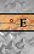
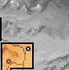
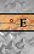
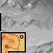

|
 |
 |  | ||||
| |||||||
|
|
 |  | ||||
| |||||||
James' breath emerged from his lips as a frosty white cloud.Below him, Seigneur Locklear negotiated scrub brush as he worked his way up the winding mountain path. He cursed expansively as a thorn bush caught in the chinks of his leg guards and he paused to throw his friend an exasperated frown. James smiled, then turned to look out over the snowy peaks that marked the boundary of moredhel territory.
Five hours after arriving at Northwarden, Baron Gabot had called both he and Locklear into his meeting room. While worried about James' story of Nighthawks, he was far more concerned that his magical adviser had not reported back from investigating possible moredhel activity. With a large band of the Dark Brothers approaching his castle, he feared that the old magician might have fallen into enemy hands, and so, reluctantly, he had asked the two Seigneurs to finish Patrus' job.
Locklear arrived puffing, his face haloed by mist.
"I thought I was going to have to come down there and carry you up," James said grinning. "You shouldn't have stayed up all night with that serving girl."
"I didn't expect to have to get up at the crack of dawn," Locklear growled, yanking a twig from his chain mail. "Mountain climbing and armor do not mix."
Suddenly, the two Seigneurs wheeled to the sound of a horrible mewling...
PATRUS: ...And if it weren't bad enough I had to chase you, you made me get rocks in my best shoes! I'm blistered! Know how mad I get when my feet hurt? I get river bottom mud sucking badger whacked mad...
JAMES: Excuse us...
PATRUS: Go way. I'm busy right now agitatin' this here moredhel...
JAMES: Begging your pardon, but I am Seigneur James...and this...and this is...Seigneur Locklear. We have been sent...by the Baron Gabot...to find...you. You are his magical advisor, aren't you?
PATRUS: Just Patrus, please. I don't ken to titles much. Glad to meet you. I've just been out trying to get some information about these moredhel. They've been gettin' too close to the castle and it was makin' my tongue itch. Man can't respectably eat thataways.
JAMES: Have you...learned anything about the attack?
PATRUS: Only that there's six companies of 'em out creepin' in the woods somewhere, but I don't know exactly where yet. I think they've got their own magicians, too.
JAMES: Magicians?! The Baron will be sorry to hear that, I'll wager. We need to return to the castle. Which way would be quickest?
PATRUS: Northwarden? Oh, well it's THATAWAY...
| MAN IN DENCAMP INN (Tamney Quest triggered) |
| FIRST VISIT | SECOND VISIT |
|
The man invited them to talk. A quiet, amiable fellow who was missing three of the fingers of his left hand, he smiled as James and Locklear told some of the stories about their childhood together in Krondor. When at last they began a story about the minstrel Laurie who had become the Duke of Salador, the man nodded, but interrupted them when they claimed he was the best minstrel that ever lived. "I imagine this Duke of yours was quite talented," the man said. "But a short while ago, a jongleur played here, the match of which I've never heard." Immediately Locklear and James exchanged a meaningful look, then looked back to the man. "What did this minstrel look like?" James asked. "Young, attractive. Rather tall as I recall," the man said. "Have you seen him before?" James nodded. "If it's who I'm thinking, then yes. Do you happen to know what became of him?" "Not certain, but he was asking about for a place to put down for the night. One of the other patrons that was in here told him that a franklin nearby sometimes leaves his barn open for travellers. He might have gone there." Making a mental note of all the man had said, James began to rise from the table when the man tugged at his sleeve. "Another thing, the man told him that the door to the barn sticks quite a bit and that he might not be able to get the door open. Takes quite a strong man to get it to work sometimes." "I'll keep that in mind," James said. "Have a good day." |
James remembered the man. Smiling warmly at them, the man asked how their search for the missing minstrel was going. "Have you found him yet?" "No," James replied with a sigh. "I was hoping you might have some more insight on the issue." The man shrugged. "I'm not sure I know much to help you with. All I know is that he headed towards the old barn with the sticking door. That happens quite a bit up in these climates." "What do you mean?" James asked. "Its all the rain," the man said, motioning at the roof. "Warps the doors and rusts the hinges. Half the farmers in these parts have to keep a supply of Fadamor's Formula handy just so they can get at their cows in the mornings." "Didn't know that," James replied. "Ah well, I'll leave you to your drink. We've got to be searching some more." "Good day to you then," the man said with a nod. "Hope you find him." |
Despite the fact there were no locks visible, the wooden door refused to open, and despite
repeated attempts no one seemed to be strong enough to open it, separately or together.
Despite the fact there were no locks visible, the wooden door remained securely closed despite
the group's repeated attempts to push it open.
Finally, after a great deal of struggling, innumerable grunted curses, and with a giant whining
screech the rusted hinges released!
"Ouch!" he cried out, looking for the insect responsible for his discomfort. Finding none, he
turned to a puzzled Patrus to explain his outburst. But before the words could come out of his
mouth, Patrus felt a bite...
"What is this place?" cried the magician, feeling still another sting.
"I don't know," said James. "But I suggest we leave here -- hmmph -- at once."
James took a few more steps before he realized the magician wasn't with him and turned to find
him staring off into the bushes with a comical, questioning look.
"Somethin' ain't right about things here..." Patrus said, turning in a slow circle. "Ain't what
they appears to be at all. An if'n a thing ain't what it looks like, that means it's
wearin' some kind o' mask."
"What are you babbling on about?" Locklear asked.
"The invisible magicians, you donkey!" Patrus shot back. Almost imperceptibly, his mouth began
to move. Silently forming words long forgotten, his lips began to move faster, in sync with a
secret accelerating rhythm only he could know. Then he gave voice to the words and they tumbled
from his throat, louder and louder until he was nearly shouting.
James saw a strange shimmering in the air. He turned to look and before his amazed eyes saw a
huddled pack of moredhel spellcasters!
He shook his head, then turned to the others. "This course is futile. We will gain nothing save
a waste of valuable time if we continue to travel in this direction. We must turn back."
Although he had beaten tremendous odds on his various adventures, he knew the
sheer numbers of opponents could easily overwhelm them. "We won't be able to
take all these fellows. Maybe we can try another tactic to get by them."
James stared hard at the leader of the goblin band that faced them. At his side, Locklear
counted heads, silently calculating the combined worth of the mercenary force.
"What do you think, Locky?" James muttered.
"Whatever Delekhan's game is, he's paying for it," Locklear replied grimly. "Goblin
mercenaries charge small fortunes for their services and by my guess, there's at least...a
thousand sovereigns worth of them here. I don't think they'll attack us unless they think we're
getting too close. We might be able to negotiate a passage price..."
"Pah," Patrus spat. "Dark Brothers are Dark Brothers. They're just mean spirited, period."
Stepping out of the ranks of the enemy, a tall pale complected goblin drew his sword and pointed
it at James. Speaking the Kingdom tongue with some difficulty, he glared at them with black eyes.
"You speak price of passage," he said. "Deirgun hear speaking of you and tell to Gulla. Gulla
consider and say price of passing is being thousands of two sovereigns."
"Thousands of two?" James repeated. "You mean two thousand sovereigns?"
Gulla nodded. "If you pay, we shall let you pass. If you come closer and not pay we kill you.
You give us thousands of two?"
James stared hard at the leader of the goblin band that faced them. At his side, Locklear
counted heads, silently calculating the combined worth of the mercenary force.
"What do you think, Locky?" James muttered.
"Whatever Delekhan's game is, he's paying for it," Locklear replied grimly. "Goblin
mercenaries charge small fortunes for their services and by my guess, there's at least...a
thousand sovereigns worth of them here. I don't think they'll attack us unless they think we're
getting too close. We might be able to negotiate a change of contract..."
"Pah," Patrus spat. "Dark Brothers are Dark Brothers. They just mean spirited, period."
Stepping out of the ranks of the enemy, a tall pale complected goblin drew his sword and pointed
it at James. Speaking the Kingdom tongue with some difficulty, he glared at them with black eyes.
"You speak price of passage," he said. "Deirgun hear speaking of you and tell to Gulla. Gulla
consider and say price of our changing contracts is being thousands of two sovereigns."
"Thousands of two?" James repeated. "You mean two thousand sovereigns?"
Gulla nodded. "If you pay, we shall let you pass and will fight for Gabot Baron in this battle.
If you come closer and not pay we kill you. You give us thousands of two?"
Throwing it at the feet of the goblin, he waited for it to be collected by the scrambling
mercenaries. "You promised passage," James said.
"Yes," the goblin replied. "We not fight, nor shall any our company you meet. Tell them you
paid your way at Gulla's command. We will fight for your Baron."
As the goblin leader moved away, Locklear chuckled as he whispered in James' ear. "Imagine the
look on Baron Gabot's face when that lot marches up to Northwarden and announces they're
fighting on his side. He'll have a fit!"
James smiled. "Too bad we won't be there to see it."
"Your price is too high," he said. "We could hire twice as many Kingdom soldiers for the same
price."
Striding forward, the goblin drew a line in the dirt at their feet. "Then you not cross this
line," Gulla said. "Or you will die."
Striding forward, the goblin drew a line in the dirt at their feet. "Then you not cross this
line," Gulla said. "Or you will die."
"Gulla said we could pass," James said, shouting out to the waiting band. "You have a new
contract with us."
Bewildered, the goblin hordes argued amongst themselves, the leader at last shouting for silence.
"You pass," he shouted back. "If Gulla say, we obey. You will not be harmed."
"You remember us, don't you?" James said, shouting out to the waiting band. "You have a new
contract with us?"
"We remember," the goblin leader replied. "We shall be leaving for Northwarden soon, as asked.
Come through. You shall not be harmed."
Eyeing the gap which was the mouth of Northwarden pass, James turned to Locklear and clapped
him on the back. "So, how about a little fun old friend?"
"You know, I've lost friends every time I've gone into the Northlands," Locklear replied coldly.
"Bronwynn, Captain Moyiet..."
James nodded. "Sounds to me you've got something to pay them back for then. What do you say we
go stir up trouble with Delekhan's troops in the Northlands?"
YES:
They marched in silence.
Fearing that the sound of their Kingdom speech would carry in the cold, they moved as quickly
as possible through the treacherous Northwarden pass, each steeling himself for the
difficulties that lay ahead as they surveyed the snow covered landscape.
DENCAMP BARN (Tamney Quest triggered)
Insufficient Strength
Sufficient Strength
James pushed on the door of the barn.
James pushed on the door of the barn, but it refused to budge.
INVISIBLE MAGICIANS (House South of Dencamp)
Quest not triggered
Quest triggered
Locklear felt a stinging poke.
Patrus stopped.
BARRIER West of Dencamp in Chapter 5
James stopped.

[ZONE 5: NORTHWARDEN AREA]
SOUTH OF NORTHWARDEN - Exit to Zone 4 (Kenting Rush)
JAMES:
We're wasting time. Anything that's going on this far south won't have any critical
effect on the battle at Northwarden. We need to head back...
GOBLINS IN NORTHWARDEN PASS
James counted.
GOBLINS - VARIANT A
GOBLINS - VARIANT B
A band of goblins milled in the roadway.
A band of goblins milled in the roadway.
ENOUGH - YES
ENOUGH - NO
NOT ENOUGH
James produced the required amount.
James shook his head.
James shook his head. "We don't have that much."
SUBSEQUENTLY (PRICE PAID)
VARIANT A
VARIANT B
Goblins halted them.
Goblins halted them.
NORTHWARDEN PASS - Exit to Zone 6 East (Raglam)
The wind howled.

[ZONE 6 EAST: RAGLAM AREA]
| SIEGE ENGINES |
It was a siege engine. Roughly large enough to protect three men, the engine had been covered with a thick hide which had been stripped of all its fur. Narrow slits, cut near the top of the tower, would allow archers to fire at oncoming opponents.Curiosity overcame him. Peeling back the thick hide which covered the frame, Locklear chanced a look inside...
| CATAPULT - FIRST INSPECTION |
The design was standard.
James examined the catapult with great interest, noting it was remarkably similar to the models used in the Kingdom. On many occasions he had seen rocks in excess of fifty pounds thrown twice the length of a barrel ball court with such a device.Locklear gaped in wonderment at the heavy wooden catapult.
They walked around the weapon and studied it from every angle, spending extra time looking at the firing and trigger mechanisms. On the whole it appeared to be in good condition, though one of the torsion gears had broken.PATRUS: Moredhel must'a built this toad throwin' toy to annoy the Baron. They'd never get it up the pass 'fore old grump buckets shot 'em down!
LOCKLEAR: Perhaps, but it's of no use to them now unless someone fixed it in order to lob stones at Raglam.
JAMES: Now, that's peculiar now that you mention it. Tell me Locky, if you were just going to leave something like this lying around in a field, even if you didn't have it working, would you leave it pointed at your home?
LOCKLEAR: What are you getting at?
JAMES: The only reason this thing won't function is because one of the torsion gears is broken, not something all that complicated to fix. Now suppose the gear didn't break of its own accord. Gorath told me that many of the moredhel clans had reservations about fighting under the old battle colors of Murmandamus. Now if you were one of those clans and wanted a backup plan in case you wanted to back out of the strike, it would simply be a matter of installing a replacement gear...
LOCKLEAR: ...and pulling the release lever! It even has a payload in the basket! Of course, assuming we could find the part ourselves, we could stir up some trouble. Maybe find a way to get to the plans Duke Martin needs in the confusion.
JAMES: Perhaps, but we'll need to find a replacement catapult part first. I doubt there is one lying about here somewhere, but let's check around...
They searched the area for half an hour, hoping to discover a replacement part for the broken gear. When it didn't materialize, they picked up their packs and prepared to leave.
| CATAPULT - RETURN WITH GEAR |
Locklear took a deep breath.Holding the catapult part they had found in the box, and using some makeshift tools he kneeled before the machine and set to work...
It took nearly two hours to install the part, and though Locklear wasn't positive the machine would work at all, he stepped back to admire his handiwork.
"I'm not an engineer, but I think that should work," he said, motioning to the others to join him. Together, they stood before the strange wooden creature, it's one arm poised, ready to fling its special cargo into the sleepy moredhel town of Raglam.
Locklear took a deep breath. "Shall we give it a try?" he asked.
| YES | NO |
|
Patrus backed away from the catapult. Wiping his forehead with the back of his hand, Locklear bent down to grab the wooden handle that would bring the monster to life... | James shook his head. "Perhaps we will come back later and try it," he said. "For now we should leave before we are seen." |
| CATAPULT - SUBSEQUENTLY |
James placed a hand on the wooden monster.It was a marvel of moredhel engineering and though short on artistic value -- something that marked a difference between the moredhel and their elven cousins -- it showed signs of precision craftsmanship.
"Fitting we could turn their own weapon against them," Locklear said.
Though they had already done the damage they had come to do, James wanted to watch the machine work one more time.
| RAGLAM TENT |
An old moredhel answered their call. Despite the unusual group he found before him, he allowed them into his tent.He spoke to them in the Kingdom tongue. "Were things you wear taken by combat? Or do they represent true loyalties?"
Locklear spoke quickly, "We are from the Kingdom, but we bow down before only two powers: gold and silver."
The moredhel was either satisfied with this answer, or he was too tired to care. He motioned for them to sit down. After a short conversation, they found out that he had come to Raglam to die. Too old to travel with the rest of his clan, and not willing to stay alone in Raglam, he had resolved to wander off into the forest and let his life slip away like the wind in the trees. Though he hated the moredhel race, the conversation made Patrus sort of sad. He was glad when they left.
| RAGLAM TENT |
Though they were speaking in moredhel, the loud voices inside the tent seemed to indicate that it was home to a small family."Moredhel discipline is very strict," said Locklear, listening to the harsh yelling going on inside. "Perhaps we should come back at a better time."
| RAGLAM TENT |
"The moredhel clans are largely migratory, there are a few small towns like this one with houses, but the tent before us is a more customary dwelling," Locklear whispered.He called to the occupant of the tent but received no reply. "The owner appears to be away. Perhaps we should take a look inside," he said.
| YES | NO |
|
Locklear looked around carefully, then pulled back the flap of the tent and slipped inside. James
stayed outside as a lookout. There was a bedroll on the floor and some rations in a small chest. Something on the wall of the tent caught his eye and he went to have a look at it. What had looked like a message of some kind, turned out to be nothing but a small blemish. He took a step back, putting his foot in the middle of the bedroll and onto something hard. Pulling the bedroll aside he discovered a Moredhel Lamprey hidden underneath! |
Deciding not to look inside the tent, they backed away. "If we were caught inside the whole town would come down on us," Locklear said. |
| RAGLAM HOUSE |
Locklear knocked loudly on the door.Expecting a moredhel, they were a bit surprised to see a large bull of a man come to the door. He eyed them suspiciously then spoke, "Mother of Ishap! Look at this. Kingdom dogs looking for a bone," he sneered at James, then said with a snarl, "You'd best go back to where you belong! There ain't no work here for the likes of you. Now git!"
Rather than provoking a fight that could attract the wholetown, Locklear agreed they should leave.
| RAGLAM SHOP: CLOTH YARD SHOT |
It took no extended amount of time for Locklear to discover the establishment catered specifically to archers. Upon opening a latched bin, he discovered a stack of quarrels piled high like ricks of firewood, each meticulously tagged as to where it came from and who had fletched it.
| RAGLAM INN: RAGLAM'S HOBBLE |
James approached the moredhel tavern."So you really think we can just walk right in without attracting unwanted attention?" asked Patrus.
"It's a trick I learned many years ago, everyone will gravitate toward the simplest solution to any dilemma," he whispered, reaching for the door.
Patrus wasn't convinced. "This is highly irregular."
"Look at it this way," James continued. "We either have a legitimate reason to be here or we are completely insane and are walking right into the middle of enemy territory. That doesn't make a lick of sense, so everyone inside will assume the first is true. Now try to act like you belong here..."
Conversation within the room halted briefly as James pushed his way inside the room, returning a nod from a rough looking pair of mercenaries who otherwise seemed engaged in a dispute over a lost bet.
| MOREDHEL #1 (in Raglam's Hobble) |
James approached a moredhel.He eyed them suspiciously, then shrugged. Though he spoke to them in the Kingdom tongue his speech was broken and somewhat slurred.
"You been hired by Narab's brother? What's his name again...Nago?" asked the moredhel.
James nodded his head. "Yes, we are...mercenaries...from Queg, just arrived. What news have you of the thrust South?"
The moredhel lowered his head, then whispered, "They say Captain Kroldech has got final orders for the move against Northwarden. Beyond that, I ain't got the faintest what's going on."
Resigning himself to the fact that the moredhel had nothing more of value to tell them, James remained for a short while to listen, not wanting to attract undue attention to themselves. At last, he excused himself from the table.
| MOREDHEL #2 (in Raglam's Hobble) |
The moredhel approached them.Apparently satisfied with their story about being mercenaries from Queg, the moredhel told them he was a trader who made frequent trips to several of the towns located near the border between the Kingdom and the Northlands, explaining his command of their language.
"What can you tell of the push south?" asked James.
"Word has it that Captain Kroldech received his final orders for the move against Northwarden. Futile. With our numbers, we have no hope of surviving the march to it and then breaching the walls. This Kingdom baron will crush us utterly unless the engineer has come up with something."
Trying not to be too interested, James prodded the moredhel further. "Segersen?"
The moredhel stared at them strangely. "I had heard he was killed in a Quegian battle near Palanque."
"I wouldn't know," James recovered casually. "I've not been on foot for eight years or more. I've been working in a press gang."
"Mmm," the moredhel replied. "Well, it's all a moot point at the moment anyway. Kroldech has locked himself into his commandeered command post to work on the battle plans for a goblin offensive and the engineer just sits in his house drawing up design. Hopefully the Kingdom won't elect to retaliate after this madness is over with."
They thanked him for the information he was able to provide and casually strolled back to a spot near the tavern door.
| ENGINEER'S HOUSE |
A strange old elf answered the door.He glared at Patrus suspiciously with upraised eyebrows, "Yes!? Did Eron the Minstrel send you to sing for me?"
| YES | NO |
|
"Well, come in then!" he said, ushering them all inside. "I am very busy but I work much better
with music playing. Helps me think!" "And what manner of work do you do?" asked Patrus. The moredhel scowled. "You here to sing or ask questions? There's a lute over in the corner -- use it." |
"THEN WHY ARE YOU ANNOYING ME!?" screamed the moredhel. Before they could protest he stormed into his house, closing the heavy wooden door with a bang. |
| PLAY WELL | PLAY POORLY |
|
As Patrus picked up the lute and began to play, he was amazed by the huge assortment of gears,
pulleys, springs and other equipment that were scattered around the house. The moredhel was
obviously some sort of engineer. "What is all this stuff?" whispered Locklear. "I cannot be sure but I recall stories of a moredhel weapon maker whose ideas and plans were sometimes too inspired, even for Delekhan. He was known to be a bit of a musician, though not a good one, and he used to demand musicians play for him while he worked. Only they couldn't play better than he or --" "STOP THAT RACKET! This isn't music you play! I could make better music dropping that instrument down a flight of stairs! GET OUT OF MY HOUSE!" Not wanting to upset him any further they agreed to leave. As they stepped out the door, Patrus whispered, "I tried not to play my best, but playing poorly can sometimes be as difficult as playing well..." |
Patrus played poorly. Considering his condition, this was a pretty easy task. Fortunately, this is exactly what the old moredhel wanted to hear. He grumbled something about being able to "play better," and this seemed to make him happy; soon he was telling them all about his work. "I had been working on a catapult for Captain Kroldech, but the dragon lover refused to pay me when I was finished with it. So I fixed him right up...removed a critical gear and now he can't get it to work at all." The moredhel laughed, then continued with a sly smile. "I finally had it moved to a spot within range of his house, and loaded it up with a magical poison. One of these days I'm going to retrieve that gear and you can say goodbye to Captain Kroldech then, I can assure you." "Where did you hide this gear?" inquired James innocently. "Hid it in a box by the bridge. Now shut up and let me concentrate." Despite the poor quality of the music being played, it seemed to have a soothing effect on the old moredhel, because before long they heard a soft clunk, and looking up they realized it was the sound of his head dropping onto the wooden table. Moving quietly so as not to disturb him, they left. |
| KROLDECH'S HOUSE |
| CATAPULT NOT FIRED | CATAPULT FIRED |
|
Locklear hesitated before the door. "Kroldech," he snarled, rubbing his finger across three red marks above the door frame. "What does that mean?" asked James. "Captain Kroldech. He is a moredhel leader who has a reputation for setting up residence in empty dwellings." "What are the three red marks over the door?" "Those are equal in number to the original inhabitants he murdered to ensure the emptiness of the structure. The rumors of his savagery have spread as far south as Krondor." Fearing an exchange would draw unwanted attention from other moredhel nearby, and realizing the futility of a confrontation they left. |
The door was ajar. James tried to enter the small house, but something seemed to be blocking the door. He pushed a little harder and reluctantly the door swung open a little further. Peering into the darkened room they could make out the form of a male moredhel on the floor. Kroldech's body was curled into a fetal position and he appeared to be clutching at his throat. "The engineer knew his business quite well," he said. "That catapult load seems to have been very effective. Search the room, quickly." After several minutes of intense examination Locklear called out, "I think I've found something." Behind a wooden writing desk in the corner was a Sword of Lims-Kragma, a small pouch with 150 gold coins, and a set of company orders. This would put a kink in the moredhel attack plans! |
| BRIDGE WEST OF RAGLAM |
JAMES: Well, it looks like this will be as far as we're going. Too many guards on the other side of that bridge for us to slip by. I don't think it's too important we go that way anyway. Our objective is to get those plans for the Duke. Come on, let's head back towards Raglam.
| EASTERN EXIT TO ZONE 5 (Northwarden) |
Locklear's legs ached.It seemed that he'd been walking for eternity, and the long stretch of road which led to the south did nothing for his enthusiasm. "We can keep going this way, or we can turn about. Keep going?"
YES:
Snow capped the mountains.
Locklear motioned for a temporary halt as they came through the pass into their new surroundings. Vaguely, he could sense the cold that was coming down from the north and could imagine it would be even colder on the other side of the Teeth of the World...
The portcullis creaked.An ashen faced soldier trembled as he labored at the monolithic peg wheel, his back arched backwards taut as a bowstring as he hauled the iron gate upwards. With a jerk of his neck, he gasped between clenched teeth for James and his companions to hurry inside.
Within, a handful of soldiers hurried to various tasks on the battlements and panicked captains attempted to rally the surviving contingents of the day's fighting.
"Something's wrong," James muttered, observing the disarray. "What's happened?"
"Baron Gabot's been murdered, that's what's happened!" a nearby soldier shouted, glancing up from where he worked feverishly at unplugging a keg of oil. "We found a bloody nest of Nighthawks in our midst! They murdered the Baron's staff and three of the captains before we cornered 'em in a storeroom."
"Torch those corpses immediately," James ordered. "They might be Black Slayers. Where is Duke Martin?"
"Don't know. You're the closest thing we have to nobility at the moment. Guess that puts you in command, Seigneur.
James said nothing as a rumble of thunder split the sky.
Half dead soldiers trumped past, their eyes hollowed with exhaustion as they traded places with equally worn men brought from the dining hall-turned-infirmary. Few men still possessed clothing unstained by blood.
Dour with the turn of events, James eyed the horizon for any sign of help. In all likelihood, the moredhel would attempt to breach the wall today and there was little he could do about it. Nighthawk treachery had silenced their cannons and too many men had fallen in four days of heavy fighting.
"Attack!" a voice screamed in the stillness. "Attack! Men on the south face!"
James cast a fuming curse into the sunrise. He might die, but he would send as many moredhel as he could reach in to the halls of the Death Goddess before he would go down...
The moredhel thrashed.As life dimmed in his horrified eyes he toppled backwards into a wooden balustrade. With an ear splitting shriek the railing sundered into flying splinters, tumbled after his flailing feet as he disappeared into nothingness.
Almost too dazed to breathe, James bolted to the wall to sight his fallen opponent. A crumpled heap of armor lay far below, splashed in gore and a spreading stain of red. Close by, a grim looking figure lowered his crossbow and tilted up his shaggy dark head to favor the Seigneur with a rare smile.
Arutha!
JAMES: I was beginning to believe you were going to miss all the fun!
ARUTHA: Delekhan would think me impolite if I didn't attend his little party. How are the men?
JAMES: Very bad. Of the original garrison of four hundred and fifteen men, two hundred twenty seven are dead, thirty five are mortally wounded, and the rest are afflicted with dysentery or are too exhausted to wield a sword. Your arrival came none too soon.
JAMES: No discourtesy intended, Prince, but why did you wait so long in coming?
ARUTHA: We made all haste, nearly to the point of calamity! Your well-meaning messengers bumped into trouble and nearly didn't win themselves free. Consequently we didn't receive your word until it was nearly too late for us to respond. We were greatly fortunate to arrive as soon as we did.
JAMES: The moredhel are in retreat?
ARUTHA: What few of them remain. By the accounts of my scouts, they think there may have been up to at least six companies in the hills.
JAMES: About that. Since they didn't have the decency to attack all at once, we couldn't tell.
ARUTHA: If our trackers are to be believed, four of those companies slipped out a week ago while the other two kept your forces pinned down. The rest apparently turned southwest.
JAMES: Sounds like they mean to strike at Highcastle.
ARUTHA: Undoubtedly. Since the moredhel leader has mimicked many of the moves that his predecessor Murmandamus made, it stands to reason he may make many of the same mistakes.
ARUTHA: As a precaution, I split my forces and diverted half of them to Highcastle. As soon as we are finished cleaning up here, I will take the rest of our companies to engage him there.